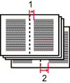

You can print a document using the creep adjustment function.
Depending on the printer you are using, this function may not be available.
When using the Magazine format to perform 2 sided printing the entire stack is folded in half, which makes the binding area more difficult to see the further the pages are from center. The Creep function lets you narrow the binding area of center pages and widen the binding area of outer pages, making the binding area of the outer pages more visible .

Open the printing preferences dialog box after creating a document in an application.
Select Booklet: on
the Frequently Used Settings tab.
You can also select it on the 2 Sided/Layout/Booklet
menu of the Detailed Settings tab.
Select Magazine in the Booklet: list.
Select the document orientation in the Page Order: list.
Configure the setting for printing mixed orientation documents if necessary.
Open the 2 Sided/Layout/Booklet menu of the Detailed Settings tab if the Frequently Used Settings tab is displayed.
Click the Creep Adjustment... button to open the dialog box.
Specify the binding margins for Inside Pages: and Outside Pages:.
The margin to adjust is the length from the center line, not the length from left to right across the center line.
Select inch or mm as the units of measurement in the Measurement Unit: list.
Click OK to close the dialog box.
After making any other necessary settings, click OK to close the printing preferences dialog box.
Start printing.